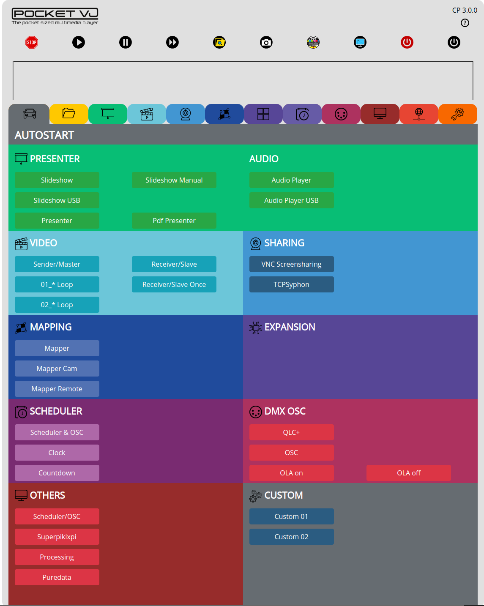

AUTOSTART¶
In this section you define into which mode the PocketVJ shall start when it powers up.
Just click the desired mode and reboot.
If it shall do nothing on boot or listen to the timetable or listen to OSC, select => Scheduler/OSC
If it shall do noting but listen to OSC/Artnet ord DMX signals, select => OSC/ArtNet
Custom 01 is for custom scripts you made yourself or users asked for.
until CP 3.0.8b => autostart into Chromium browser
since CP 3.0.8d => austart into random video player (plays all videos in folder in a random order)